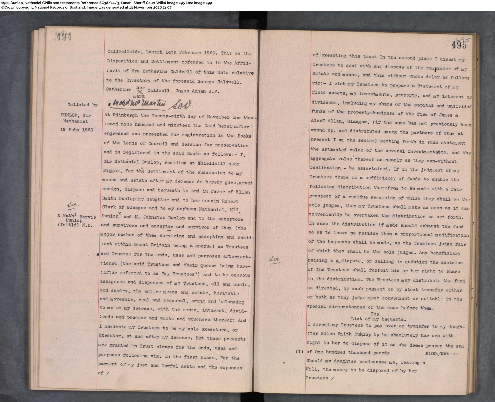

Item 23 · February 19, 1920
Will of Sir Nathaniel Dunlop, pages 494–495
The document

Tap an image to open it full size.
Transcription, word for word
Everything as written, including misspellings. [?] marks an uncertain reading. Struck-through words are marked as struck through. Notes in square brackets describe the page and are not part of it.
[Printed header] 1920 Dunlop, Nathaniel (Wills and testaments Reference SC38/44/3, Lanark Sheriff Court Wills) Image 495 Last image 499 [Printed] ©Crown copyright, National Records of Scotland. Image was generated at 19 November 2026 21:07 [Left page, numbered 494 (a pencil figure above it, illegible)] [Typed] Caldwellside, Lanark 14th February 1920. This is the Disposition and Settlement referred to in the Affid-:avit of Mrs Catherine Caldwell of this date relative to the Inventory of the foresaid George Caldwell. Catherine her X mark Caldwell James Annan J.P. [Margin, typed] Collated by [Handwritten signature] Archd McMartin[?] Sev[?] [Margin, typed] DUNLOP, Sir Nathaniel 19 Feby 1920 [Typed] At Edinburgh the Twenty-sixth day of November One thou-:sand nine hundred and nineteen the Deed hereinafter engrossed was presented for registration in the Books of the Lords of Council and Session for preservation and is registered in the said Books as follows:- I, Sir Nathaniel Dunlop, residing at Shieldhill near Biggar, for the Settlement of the succession to my means and estate after my decease do hereby give, grant assign, dispone and bequeath to and in favor of Ellen Smith Dunlop my daughter and to her cousin Robert Clark of Glasgow and to my nephews Nathaniel, Hie X Dunlop and M. Johnston Dunlop and to the acceptors and survivors and accepter and survivor of them (the major number of them surviving and accepting and resid-:ent within Great Britain being a quorum) as Trustees and Trustee for the ends, uses and purposes afterment-:ioned (the said Trustees and their quorum being here-:after referred to as "my Trustees") and to be onerous assignees and disponees of my Trustees, all and whole, and sundry, the entire means and estate, heritable and moveable, real and personal, owing and belonging to me at my decease, with the rents, interest, divid-:ends and produce and writs and vouchers thereof: And I nominate my Trustees to be my sole executors, or Executor, at and after my decease. But these presents are granted in Trust always for the ends, uses and purposes following viz. In the first place, For the payment of my just and lawful debts and the expenses of / [Margin, handwritten] Sic [Margin, typed] X Nathl Harvie Dunlop (Initld) N.D. [A mark in the margin beside "and Trustee"] [Right page, numbered 495 (also written in pencil above)] [Typed] of executing this trust In the second place I direct my Trustees to deal with and dispose of the remainder of my Estate and means, and this without undue delay as follows viz:- I wish my Trustees to prepare a Statement of my fluid assets, my investments, property, and my interest or dividends, including my share of the capital and undivided funds of the property-business of the firm of James & Alexr Allan, Glasgow, (if the same has not previously been wound up, and distributed among the partners of whom at present I am the senior) setting forth in such statement the estimated value of the several investments[letters struck over] etc. and the aggregate value thereof as nearly as they can-without realization - be ascertained. If in the judgment of my Trustees there is a sufficiency of funds to enable the following distribution therefrom to be made with a fair prospect of a residue remaining of which they shall be the sole judges, then my Trustees shall make as soon as it can conveniently be overtaken the distribution as set forth. In case the distribution if made should exhaust the fund so as to leave no residue then a proportional modification of the bequests shall be made, as the Trustees judge fair of which they shall be the sole judges. Any beneficiary raising a a dispute, or calling in question the decision of the Trustees shall forfeit his or her right to share in the distribution. The Trustees may distribute the fund as directed, by cash payment or by stock transfer either or both as they judge most convenient or suitable in the special circumstances of the case before them. The List of my bequests. I direct my Trustees to pay over or transfer to my daugh-:ter Ellen Smith Dunlop to be absolutely her own with right to her to dispose of it as she deems proper the sum [Margin] (1) of One hundred thousand pounds £100,000:-:- Should my daughter predecease me, leaving a Will, the money to be disposed of by her Trustees / [Margin, handwritten] Sic [The second "a" in "a a dispute" is underlined by hand]